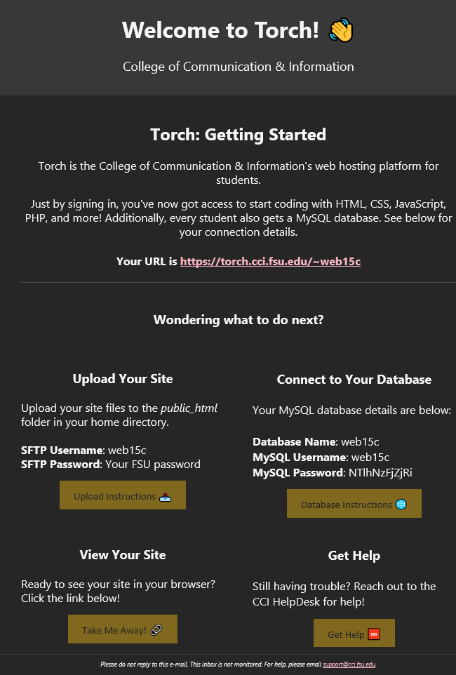
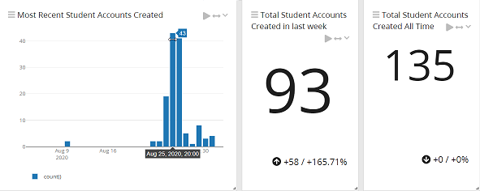
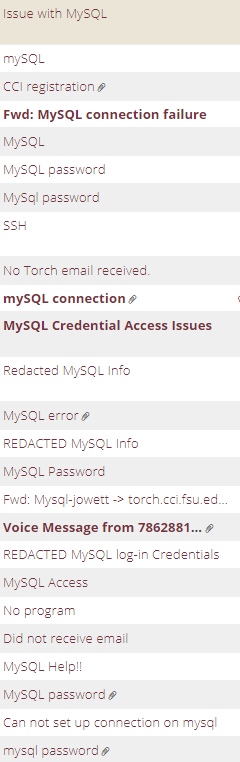
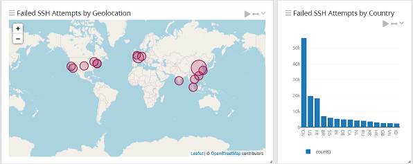
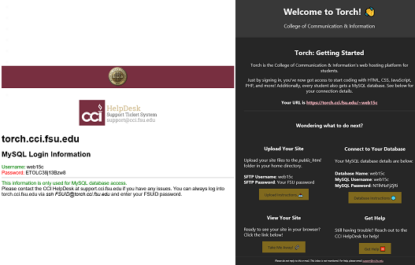
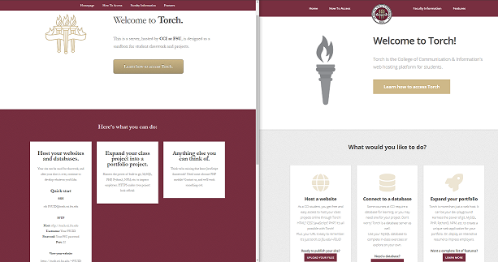

If you’re a system administrator looking for unique ways to incorporate Linux servers with class curriculums, this article may inspire methodologies for bringing the command line to the student masses.
Estimate: 10 Minute Read
Table of Contents
Forward - What You Can Gain from Reading This
I asked on reddit’s /r/linuxadmin how they handle student-accessible servers. Many ideas were brought up - segmented Docker containers, locked down hosts, restrictive commands. I went with what I know best: a strong dose of Ansible, glorious SSSD, and trusty Bash.
Our goal was for students to:
- Be able to quickly upload website files (wildcard SSL cert allows every student to have a nice and pretty lock on their webpages).
- Utilize MySQL for classwork or web development projects.
- Have an agile server that can be torn-down and restored from scratch quickly (*all() configuration through Ansible).
- Continue to use their web server after class is over. No more Wix, Weebly, or Squarespace.
Links:
- Main script to watch for account creation, create MySQL account, and fire off credentials to student.
The Problem
One unfortunate reality I’ve discovered, moving from an undergraduate IT student, to System Administrator pursing a Master’s in IT, is that not all students share the same love of the Linux command line as I do.
Most student’s view the command line - a requirement for their Intro to MySQL class, or basic web development - as an obtuse, ancient obstacle for submitting their assignments.
Therefore, we wanted to provide a server (Torch) that will be equally accessible to students that require a GUI for every application, and “power user” students itching for freedom on a university funded pseudo-VPS.
Exposition
Previously, CCI (my org) operated 4 or so hosts, one for each class that required some server space.
- Each instructor created SSH accounts manually for each student - often with credentials shared class-wide. Students had no sense of privacy or identity with their Linux accounts.
- After class was over, students lost connection with their account. No way would they continue to use, or could use, accounts spanning across servers named by their course code (LIS1234, LIS4321, LIS5666, etc.)
- Advanced students had trouble developing personal projects on hosts without SSL, or permissions for multiple MySQL databases. How would we foster the next Zuckerberg without giving students the tools to experiment?
Myself and my fellow system administrator wanted to create a sandbox for our students. One singular server to rule them all. A hostname easy to remember, credentials that matched their university experience across all services, and something accessible to students simply trying to get good grades or students pursuing programming projects.
What We Implemented Uniquely
Not unique for you sysadmin veterans, but a first for our college.
SSO and Credentials
SSO is obviously fantastic. No holds barred, SSO is the light at the end of the sysadmin tunnel. Every service we employ, whether it’s logging, monitoring, or Ansible automation, needs to have SSO. Besides security benefits, it’s just so convenient. Our students did not know such joy, recieving a list of usernames and passwords from instructors they would need to pull up before starting every assignment.
SSSD was our counter-measure for individualized credentials. My first project as a HelpDesk technician, SSSD allows fine tuning our Linux authentication from /etc/sudoers to SSH access. Despite being on Debian-based systems, SSSD is the core component of our Ansible configuration and delegating access to our systems. We were able to open up the server to every single student enrolled in a relevant course with ease.
What about MySQL credentials?
While it is certainly possible to use PAM in conjunction with MySQL to get SSSD logins, that was one layer of abstraction too far. I was shaking up class procedures that have been in place for a decade - faculty might not appreciate a complete and total overhaul.
In comes postfix, and my fellow sysadmin’s great web design (he used HEML for creating the HTML email). This email is automatically sent as soon as a student connects to Torch.

As you can see here, we are in-tune with the youth of today, adding emojis. The MySQL password is randomized with a little salt shaken on top.
The important part: Students receive this email at their student address on their first connection, regardless of connection type:
- SSH
- SFTP
- MySQL Workbench
# insert credentials into email
sed -i "s/FSUID/$FSUID/g" /home/$FSUID/torch-template.html
sed -i "s/PASSWDDB/$PASSWDDB/g" /home/$FSUID/torch-template.html
# email to students
cat /home/$FSUID/torch-template.html | mail -s "Welcome to torch.cci.fsu.edu $FSUID!" -a "From: XXXXX@cci.fsu.edu" $FSUID@my.fsu.edu --content-type=text/html
# and email to HelpDesk for recovery or email trouble
cat /home/$FSUID/torch-template.html | mail -s "Welcome to torch.cci.fsu.edu $FSUID!" -a "From: XXXXX@cci.fsu.edu" <insert service desk email> --content-type=text/htmlSolving the SFTP problem
Back to the main problem we were solving, making the host accessible for students regardless of initial skill level, we had to not only trigger our MySQL account creation on traditional SSH (also accounts for MySQL Workbench), but for SFTP through FileZilla, Transmit, etc.
This was tough. Conventional methods of taking action upon first time account creation didn’t work well - /etc/profile.d, /etc/skel, etc. all failed the SFTP litmus test.
In comes inotifywatch. A beautiful utility that helps monitor directories for changes. The one assumption I had about SSH and SFTP was that a new folder in /home/ would be created with the user’s username.
# infinite loop
while true
do
# upon new /home/ directory creation, spit out the username to $FSUID
FSUID=$(inotifywait -q -e create /home/ | awk '{ print $NF }')Then check to see if the user already has an account - if not, their MySQL username/databases will be dropped.
flag=/home/"$FSUID"/.flag_DONOTDELETE
if [ -e /home/$FSUID/$flag ]
thenThis GitHub Gist has the complete script, edited for security.
On a smaller note, I included some text into the above dot file to encourage any curious students to apply for a job - similar to other trendy websites including job advertisements in their source code.
echo "Reading the .dotfiles? You're a curious student. Apply for a job at the CCI HelpDesk and mention this message!" >> $flagA Quick Note on Passwords
Security was a key objective, and I threw in a little bit of salt to help with the password generation, but it’s probably not necessary and a little redundant.
PASSWDDB=$(date +%s | sha256sum | base64 | head -c 12 ; echo)Systemd - Small Note
One last thing that may be useful to someone is the systemd unit service to run the above program infinitely.
[Unit]
Description=Torch First Login Setup
[Service]
ExecStart=/<script location>/classweb_login.sh
User=root
Group=root
[Install]
WantedBy=multi-user.target
How The Rollout Went
User Testing
Luckily I was enrolled in a Usability Analysis course when performing the initial Torch planning. I realized it may be useful to have some users test the MySQL generation, usability, and login system other than myself.
Our HelpDesk technicians performed valuable user testing, letting me know where I was assuming too much, or what parts were easy.
Example of testing tasks:
2) Uploading a website file
Create a file titled "index.html" on your local machine. Type whatever you would like in that, it can be a simple phrase or word.
Connect to the server with SFTP using the parameters above.
Do you see a file titled ‘Torch Account Information’? If so, can you open it and read the contents?
Upload the index.html file with an FTP program, such as FileZilla or CyberDuck, to either, "public_html" in your home directory, or /web/FSUID. Upload your index.html to either spot.
Using a web browser, go to https://torch.cci.fsu.edu/~FSUID. Did your site load properly, and did you get a lock on the webpage (SSL)?
Scope Creep and the First Day
As the semester drew closer and closer, and working with professors on the new system, I was worried. What would happen if two users logged in at the exact same second? What about different versions of MacOS, MySQL Workbench, Putty, Mac Terminal, and Gentoo users?
At the last second, our scope went up dramatically. We decided to incorporate the behemoth MySQL-only server into Torch. This made a lot of sense - MySQL 101 students could simply ignore the web development aspects, and have MySQL credentials they could use throughout their degree.
Then it arrived - the onslaught of logins. Enjoy the photos below:

There was confusion in one class that we provided the login credentials, cue tickets:

I eventually setup an auto-responder for the sheer amount of tickets that we could not assist with.
Some commands I didn’t expect users to run:
apt install putty-tools (Obviously, students don't have sudo access)
/mnt/c/Users/some_student$ ssh some_student@torch.cci.fsu.edu (Copying Windows CMD SSH, and trying to SSH into the server they're already logged into)
cd C:\Users\some_student\Desktop (Self Explanatory)
Thankfully we had Graylog setup to easily parse through command history. My point here is not to make fun of students not having a solid grasp on the command line - only to point out that I didn’t expect such issues from my testing or thought process. We’ve all been there before.
Fail2ban Woes
Ever since taking one security class and reading Sandworm, I’ve become much more interested in securing our hosts.
You can see some of our attack origins here:

While these are automated bot attempts, we did have an unfortunate encounter with some malicious Turks a while back. As such, I have strict fail2ban rules, ranging from SSH attempts to amount of 404 GETs. After having multiple students get caught in the filter (allowing ~10 failed SSH attempts, x3….) I had to raise our filter limit for this server only.
Graylog was fantastic for searching individual IPV4 addresses and seeing if students were caught in the fail2ban net.
Miscellaneous Notes
tl;dr - tldr is a “Collaborative cheatsheets for console commands”, and the only FOSS project I’ve been able to contribute to. I hope some students find a good use for it - I use it everyday. I advertise its existence on the torch.cci.fsu.edu homepage.
[web15c@torch]~❯ tldr tar
tar
Archiving utility.
Often combined with a compression method, such as gzip or bzip.
More information: <https://www.gnu.org/software/tar>.
- Create an archive from files:
tar cf target.tar file1 file2 file3
- Create a gzipped archive:
tar czf target.tar.gz file1 file2 file3
- Create a gzipped archive from a directory using relative paths:
tar czf target.tar.gz -C path/to/directory .
- Extract a (compressed) archive into the current directory:
tar xf source.tar[.gz|.bz2|.xz]
- Extract a (compressed) archive into the target directory:
tar xf source.tar[.gz|.bz2|.xz] -C directory
Don’t skimp on the web development - my attempt at the HTML email versus my coworker’s attempt:

And one of the webpages (basic template HTML5UP):

After Action Report
All in all, my first major project for the general public (students in my university’s college) went well. We had around 125 accounts created, and maybe 20 tickets created needing help. ~16% of students having issues is not a good metric. However, with better understanding for faculty, and much improved help resources on the main domain, this should be easier every semester to come.
Some important goals I have for the future:
- Monitoring /home/ folder size, not just the server’s disk space remaining.
- Better usability analysis of student pain points, and finding solutions.
- Continuing to adjust the server configuration to match course requirements and satisfy faculty (automated grading scripts?).
- One edge-case I couldn’t solve for is users logging in without the student email suffix (@my.fsu.edu) - may do some AD lookups to remedy this.